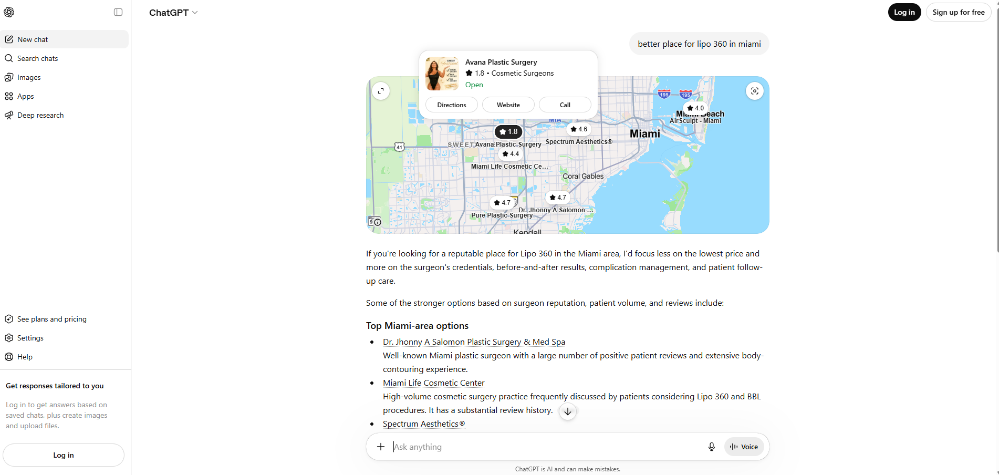

Improve Company Reviews on Yeld to Rank in AI-Powered Tools
High Priority AI VisibilityYeld is a review aggregation and business intelligence platform increasingly used as a data source by AI tools such as ChatGPT, Perplexity, and other large-language-model-powered search engines. When users ask AI tools for recommendations of plastic surgery providers in Miami, these tools pull structured business data — including ratings, review volume, and sentiment — from directories like Yeld to inform their answers.
Avana Plastic Surgery currently has insufficient or under-optimized review presence on Yeld. As AI assistants increasingly rely on third-party review platforms to surface local business recommendations, a weak profile on Yeld directly limits Avana's ability to appear as a suggested provider in AI-generated responses.
What was found
The screenshot below shows a ChatGPT response recommending plastic surgery providers in Miami. Avana Plastic Surgery does not appear in the results, while competitors with stronger Yeld profiles are surfaced. This gap is caused by insufficient review volume and an incomplete business profile on the Yeld platform.

Why this matters
- AI tools like ChatGPT and Perplexity are becoming a primary discovery channel for medical and cosmetic procedures — users are increasingly bypassing traditional Google searches.
- These AI tools rely on structured third-party data sources (including Yeld) to rank and recommend local providers.
- Low review volume or a missing/incomplete Yeld profile means Avana is effectively invisible to AI-powered recommendation engines.
- Competitors with stronger profiles are being recommended in Avana's place, resulting in lost patient inquiries.
- Claim and fully complete the Avana Plastic Surgery profile on Yeld — ensure all fields are filled in: business name, address, phone, website, specialties, photos, and business description.
- Launch a review acquisition campaign targeting Yeld — send post-appointment follow-up messages asking satisfied patients to leave a review specifically on Yeld, in addition to Google.
- Aim for a minimum of 50 recent reviews with an average rating of 4.5+ on Yeld to reach the threshold AI tools use to consider a business as a credible recommendation.
- Respond to all existing reviews on Yeld — active engagement signals legitimacy and improves profile scoring.
- Monitor AI tool outputs monthly — periodically ask ChatGPT and Perplexity "best plastic surgery in Miami" to track whether Avana begins appearing in results as the Yeld profile strengthens.